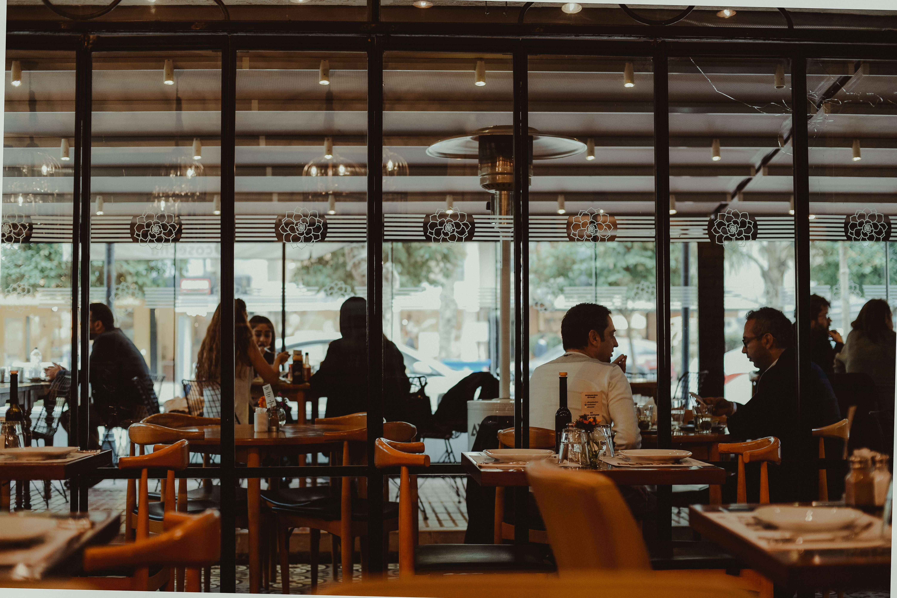
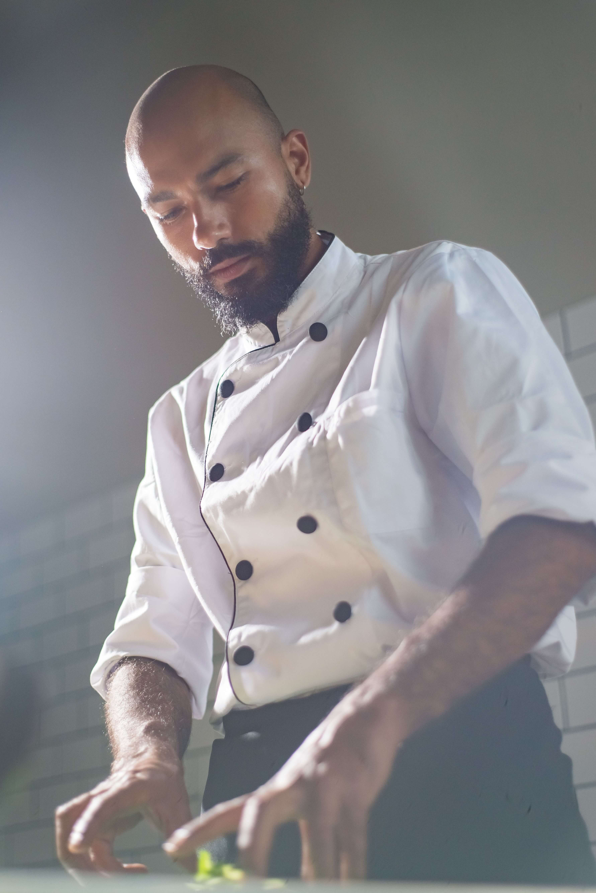
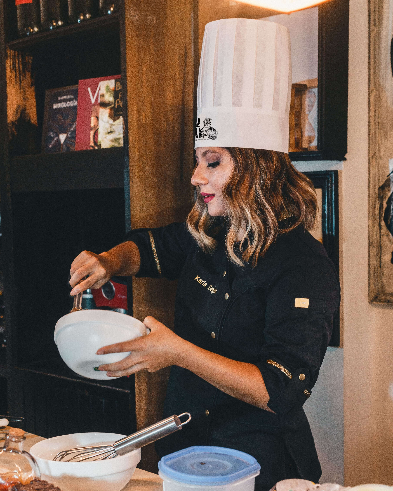
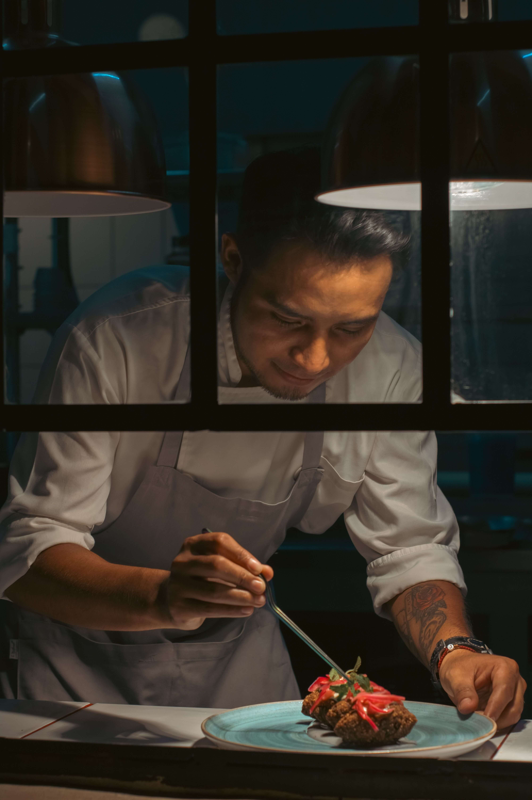

Authenticité
Nous cuisinons des recettes fidèles à leurs origines, avec des épices et des techniques traditionnelles.
Une passion pour la cuisine, un amour pour les gens.
Judd Resto est né d’un rêve simple : partager les saveurs de notre enfance avec le plus grand nombre. Tout a commencé dans une cuisine familiale, où les recettes se transmettaient de génération en génération.
Aujourd’hui, notre restaurant perpétue cette tradition. Nous respectons les recettes d’origine tout en y ajoutant une touche moderne. Notre ambition est restée la même : que chaque client reparte le ventre plein et le cœur léger.

Nous cuisinons des recettes fidèles à leurs origines, avec des épices et des techniques traditionnelles.
Nous choisissons des produits frais et locaux, et nous refusons les raccourcis en cuisine.
Chaque client est accueilli comme un invité de la famille.

Fondateur et chef exécutif
Passionné de cuisine depuis toujours, Judd imagine les plats de la carte et veille à leur qualité.

Responsable de salle
Elle accueille les clients et s’assure que chaque visite se déroule parfaitement.

Chef de cuisine
Il dirige la brigade au quotidien et garantit la régularité de chaque assiette.
Le meilleur moyen de nous connaître, c’est de goûter notre cuisine.
Découvrir le menu Réserver une table